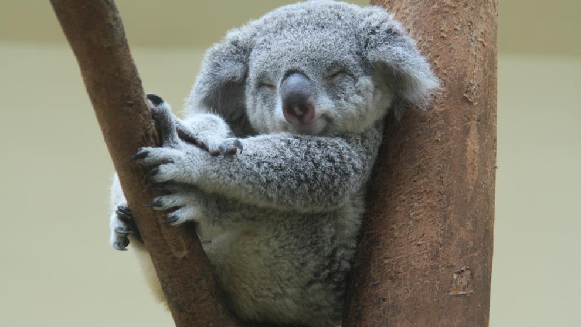

La Australian Koala Foundation ha dado la voz de alarma en un comunicado
La ONG Australian Koala Foundation ha dado la voz de alerta al asegurar en un comunicado que Australia podría perder uno de sus iconos más preciados. Los koalas y el hábitat en el que viven sufren desde hace tiempo una situación de profunda amenaza, agravada con el paso de los años, hasta el punto de que podrían estar “funcionalmente extintos”. La fundación afirma que, según sus estimaciones, tan solo quedan 80.000 ejemplares de esta especie en Australia, por lo que reclama la ley de protección para estos animales. Esta cifra representa apenas el 1% de los ocho millones que fueron abatidos entre 1890 y 1927 por su piel y enviados a Londres. Asimismo, el comunicado revela que, tras haber monitorizado desde 2010 los 128 distritos electorales que se encuentran dentro del hábitat del koala, la especie ya ha desaparecido de 41. La destrucción de los hábitats del koala y la desaparición de los eucaliptos, que constituyen su principal sustento, son las principales amenazas para la supervivencia de estos animales. En muchas ocasiones, son el avance de la industria y la urbanización, que invade el espacio natural de estos marsupiales, los que los ponen en peligro.